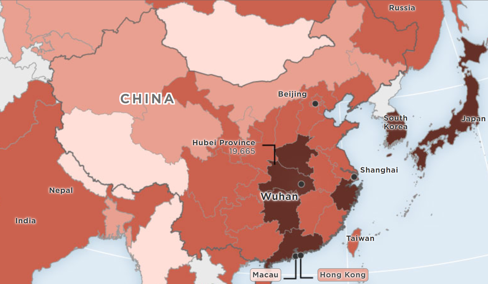
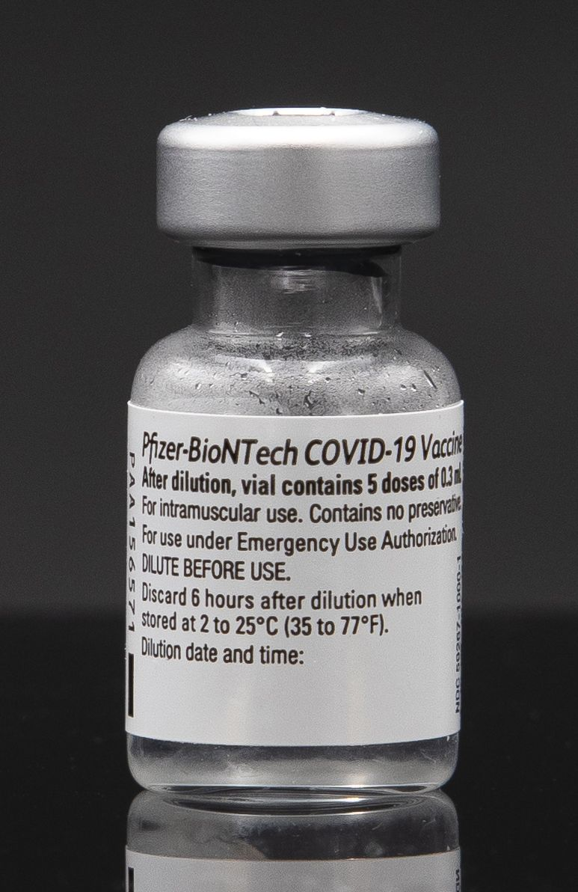

1/21 - The Department of Health (DOH) looked into a suspected case of COVID-19 following the arrival of a five-year-old Chinese boy. Samples taken from the boy were tested at the Research Institute for Tropical Medicine (RITM) and yielded negative results for Severe Middle East Respiratory Syndrome-Coronavirus (MERS-CoV) and Severe Acute Respiratory Syndrome (SARS). However, the samples tested positive for the “non-specific pancoronavirus assay”.[1]
1/30 - The Philippines confirmed its first case of COVID-19. The patient was a 38-year-old Chinese woman from Wuhan which was the epicenter of the outbreak.[2]
2/02 - A 44-year-old Chinese male, who was the companion of the first confirmed case of COVID-19 in the country, tested positive for the virus and died due to it. This makes him the second confirmed case of the country and the first death due to the virus outside of China.[3]
2/05 - DOH confirmed that a 60-year-old female Chinese patient under investigation (PUI), who arrived in Cebu City from Wuhan, tested positive for COVID-19. She was the third confirmed case in the country.[4]

An outdated choropleth map of coronavirus cases in China and its surrounding countries
March - April
3/06 - 2 more cases of COVID-19 were confirmed, bringing the total to 5. This includes one that could be a potential case of local transmission. The country's fourth coronavirus case was a 48-year-old Filipino who traveled to Japan while the fifth case was a 62-year-old Filipino. Both tested positive for the virus on March 5.[5]
3/07 - Philippine health authorities raised Code Red as it confirmed local transmission and another case of COVID-19, bringing the total number of patients to 6. The patient was a 59-year-old woman who got infected from her 62-year-old husband, the country's fifth case of COVID-19. The man was, meanwhile, the first confirmed local transmission of the disease.[6]
3/09 - President Rodrigo Duterte issued Proclamation 922 formally declaring a state of public health emergency throughout the country after the health department reported the first known local transmission.[7]
3/12 - President Duterte announced tougher measures to combat the spread of the disease, including work and class suspensions as well as travel restrictions, as part of a community quarantine in Metro Manila. The Philippines raised Code Red Sub-Level 2 over the threat.[8]
3/16 - President Rodrigo Duterte said an enhanced community quarantine (ECQ) in Luzon will run until April 13.[9]
3/25 - President Duterte signed the Bayanihan to Heal as One Act, which granted him additional powers to adopt “temporary emergency measures” to respond to the COVID-19 outbreak in the country.[10]
4/06 - The virus reached every region in the country with the Caraga region confirming their first case. The patient was a 68-year-old male from Butuan City with a pre-existing medical condition.[11]
4/07 - President Duterte accepted the Inter-agency Task Force on the Management of Emerging Infectious Diseases’ recommendation to extend the ECQ in Luzon until April 30.[12]
4/28 - The government revised the list of areas that will remain under ECQ from May 1 to 15. The list of areas under ECQ were:[13]
National Capital Region
Central Luzon except Aurora
CALABARZON
Pangasinan
Benguet
Baguio City
Iloilo
Cebu
Cebu City
Davao City
May - June
5/13 - High-risk areas such as Metro Manila, Laguna, and Cebu City were placed under modified enhanced community quarantine (MECQ). 41 provinces and 10 cities considered moderate risk were eased into a general community quarantine (GCQ) while 40 provinces and 11 cities considered low risk had their quarantines lifted.[14] Later that day, the low-risk areas were placed under a modified general community quarantine (MGCQ).[15]
5/14 - The quarantine status of low-risk areas was changed once again to a GCQ starting May 16.[16]
July - August
7/30 - DOH recorded 37,180 recoveries from OPLAN RECOVERY, which was an initiative to monitor the statuses of confirmed COVID-19 cases.[17]
8/02 - The number of COVID-19 cases in the country passed the 100,000 mark with 5,032 cases reported that day.[18]
September - October
9/11 - President Duterte signed into law the Bayanihan to Recover as One Act, which provided PHP165.5-billion to finance the country's response and recovery interventions intended to mitigate the impact of the pandemic.[19]
9/18 - President Duterte extended the period of the state of calamity until Sept. 12, 2021 through Proclamation No. 1021.[20] On the same day, visitors were not allowed in public and private cemeteries from October 29 to November 4 to prevent mass gatherings caused by 2020’s Undas.[21]
9/29 - With Batanes recording its first confirmed case, which is of a locally stranded individual who recently went home to the province, all provinces in the country now had a COVID-19 case.[22]
President Duterte signing the Bayanihan to Recover as One Act with Secretary Delfin Lorenzana and Senator Christopher “Bong” Go beside him
November - December
12/23 - All flights from the United Kingdom to the Philippines were suspended from Dec. 24 to 31 amid reports of a more transmissible coronavirus variant.[23]
12/29 - The country decided to ban travelers from 20 nations from Dec. 30 to Jan. 15. The travel ban covered:[24]
Australia
Canada
China
Denmark
France
Germany
Iceland
Ireland
Israel
Italy
Japan
Lebanon
Singapore
South Africa
South Korea
Spain
Sweden
Switzerland
The Netherlands
United Kingdom
2021
January - February
1/13 - The coronavirus variant first reported in the United Kingdom has been detected in the Philippines. The 29-year-old male patient was a resident of Kamuning, Quezon City.[1]
1/14 - The country approved the use of Pfizer-BioNTech's COVID-19 vaccine, which was the first one to be granted emergency use authorization in the country.[2]
1/20 - 13 people who came in contact with the Philippines' first known coronavirus case with the UK variant tested positive for COVID-19.[3]
1/22 - 16 new cases of the UK variant were detected in the country. 12 of the 16 additional cases were from Bontoc, Mountain Province.[4]
2/18 - Scientists in the country discovered the presence of two mutations of SARS-CoV-2, which could explain the continued increase of COVID-19 cases in Cebu. They were tagged as E484K and N501Y.[5]

A vial of the Pfizer–BioNTech COVID‑19 vaccine for the U.S. market
March - April
3/02 - The Philippines detected its first 6 cases of South Africa COVID-19 variant. Among those cases, 3 were local cases, 2 were returning overseas Filipinos (ROF) from Qatar and the United Arab Emirates, while the location of the remaining case was pending verification.[6]
3/13 - DOH confirmed a coronavirus variant called P.3 which was unique to the country. They also confirmed the country’s first case of the P.1 variant first discovered in Brazil. The Philippine Genome Center (PGC) found it in the samples of an ROF who returned from the aforementioned country.[7]
3/21 - Bulacan, Cavite, Laguna, and Rizal were placed under a stricter GCQ as infections rise from March 22 to April 4.[8]
4/26 - The COVID-19 cases in the country breached the 1-million mark brought by 8,929 cases recorded that day.[9]
May - June
5/11 - The country detected its first 2 cases of the Delta variant first identified in India. The variant had been confirmed in Filipino seafarers who returned in April.[10]
July - August
7/16 - 16 cases of the Delta variant were reported, bringing the country’s total cases of the variant to 35. Of these, 11 were local cases.[11]
7/23 - GCQ with heightened restrictions was in effect until July 31 in Metro Manila, Ilocos Norte, Ilocos Sur, Davao de Oro, and Davao del Norte.[12]
7/29 - 97 cases of the Delta variant were reported, raising the total to 216. 88 of the newly reported cases were local while 6 were ROFs. 94 of the latest Delta variant cases recovered while 3 died.[13]
8/05 - DOH reported 116 more cases of the COVID-19 Delta variant, pushing the tally to 331. Of the additional Delta variant cases, 95 were detected locally while 1 was an ROF.[14] On the same day, the provinces of Laguna, Cagayan de Oro and Iloilo City were placed under ECQ from August 6 to 15. Cavite, Lucena City, Rizal and Iloilo Province, were under modified ECQ while Batangas and Quezon were under GCQ with heightened restrictions, all within the same period.[15]
8/15 - The country detected its first case of the Lambda variant first seen in Peru. The patient was a 35-year-old female. Meanwhile, the DOH also reported 182 cases of the Delta variant, raising the country's total to 807. 1 case was active, 176 recovered, and 4 died.[16]
8/19 - Metro Manila and the province of Laguna were put under MECQ from August 21 until August 31. The province of Bataan was also placed under MECQ from August 23 to 31.[17]
September - October
9/01 - The country’s recorded COVID-19 cases crossed the 2 million mark after 14,216 infections were logged.[18]
9/03 - The Philippines' Food and Drug Administration (FDA) approved the emergency use of Moderna's COVID-19 doses for children ages 12 to 17.[19]
10/25 - The Philippines detected 380 more cases of the Delta variant as well as one case of the B.1.1.318 variant first detected in Mauritius. Aside from the additional Delta variant cases, the government's latest run of 746 samples also found 104 cases of the Alpha variant, first reported in the UK, 166 cases of the Beta variant, first detected in South Africa, and 1 case of the B.1.1.318 variant.[20]
Vials of the Moderna COVID-19 vaccine
November - December
11/08 - Authorities detected the first case of the B.1.617.1 variant in a 32-year-old patient from Floridablanca, Pampanga who experienced a mild case but has recovered.[21]
11/11/21 - President Rodrigo Duterte signed Executive Order No. 151 which approved the nationwide implementation of the alert level system for COVID-19 response. The system replaces the old system of quarantine classifications, which comprised of ECQ, MECQ, GCQ, and MGCQ. The new system is more relaxed with age mobility restrictions and provides perks to fully-vaccinated people.[22]
12/28 - The Philippines detected four cases of the Omicron variant with all of these coming from international travelers.[23]
Parrocha, A. (2020, March 9). State of public health emergency declared in PH. Philippine News Agency. Retrieved November 11, 2021, from https://www.pna.gov.ph/articles/1095955
Parrocha, A. (2020, May 14). GCQ, not MGCQ, to be implemented in low-risk covid-19 areas. Philippine News Agency. Retrieved November 11, 2021, from https://www.pna.gov.ph/articles/1102919
Cervantes, F. M. (2020, September 11). Duterte signs P165.5-B bayanihan 2 law. Philippine News Agency. Retrieved November 11, 2021, from https://www.pna.gov.ph/articles/1115210